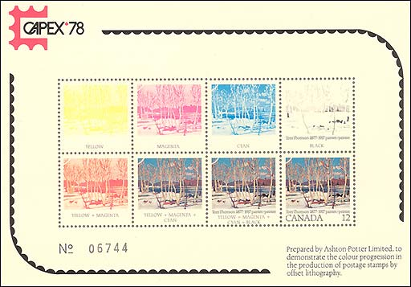
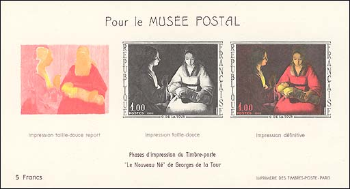

The Art of Stamps Printing
At the Canadian Exhibition CAPEX'78, the printing house Ashton-Potter Limited has proposed a numbered sheet that nicely demonstrates the color progression in the production of postage stamps by offset lithography.
The principle that oil and water do not mix is the basis for lithography. The stamp design is drown by hand or transferred from engraving to the surface of a lithographic stone or metal plate in a greasy (oily) substance. This oily substance holds the ink, which will be later transferred to the paper. The stone (or plate) is wet with an acid fluid, causing it to repel the printing ink in all areas not covered by the greasy substance. Transfer paper is used to transfer the design from the original stone or plate. A series of duplicate transfers are grouped and, in turn, transferred to the printing plate (After Scott 1999, Vol. 1).

To exemplify this, it has taken the stamp 12c, Tom Thomson, Scott 733, April in Algonquin Park. This stamps was issued in pair with another painting of Tom Thomson, Autumn Birches, on May 26, 1977. On the first row there are presented the results of printing with only one color (yellow, magenta, cyan or black). The second row shows the result of printing firstly with yellow + magenta, then cyan color is added, and at the end the black is brought too. Just to mention that a separate print in black is necessary because the black cannot be obtained from a combination of yellow + magenta + cyan.

For comparison purposes we present another nice sheet, with two progressive die proofs, issued for benefits of the Postal Museum. The represented painting is "The Newborn", by Georges de la Tour, Sc. 1150. The sheet is ungummed.
Credits: Many thanks to Blair Stannard from Canada, who sent me the Tom Thomson sheet.